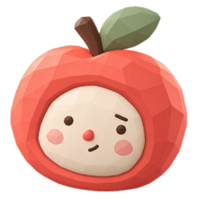
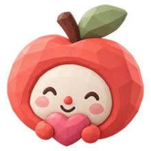
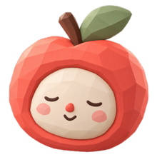
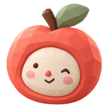

Tests you take
A daily check-in
Four quick tests: heart rate, temperature, a lung check and calm sensing. A ring shows what's left today.
APOLLO
Apollo turns the sensors already in your phone into a quick daily health check-in, then helps you act on what it finds. No extra hardware.
What it does
Tests you take when you want them, tracking that runs quietly if you opt in, and a clear path from a reading to what to do about it.
Four quick tests: heart rate, temperature, a lung check and calm sensing. A ring shows what's left today.
Steps and flights climbed, plus a prototype that counts blinks and gaze shifts. Nothing runs until you turn it on.
Ask Apollo what a reading means, get products picked for you, then order delivery or find care nearby.
Tests you take
The ring fills one quarter per test. Tap once and Apollo runs the rest in order.
Opt-in passive tracking
Turn it on once and Apollo keeps a gentle eye on your day.
Actionable insights
Apollo turns readings, chats and searches into a few short shelves, like a pharmacy aisle sorted for you.
When you need a person
Hospitals, urgent care, clinics and pharmacies near you, with hours, phone numbers and directions.
Ask Apollo
Do I have a fever?

Your last reading was a little warm. Want to recheck, or see what helps?
Built on trust

No accounts and no cloud database.

Emergency words get 911 and 988 straight away.

Apollo never buys anything for you.
The research behind it
Apollo builds on published work from UW Ubicomp and others.